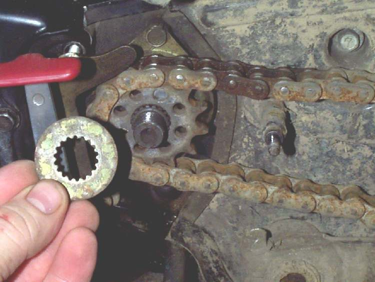
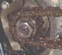
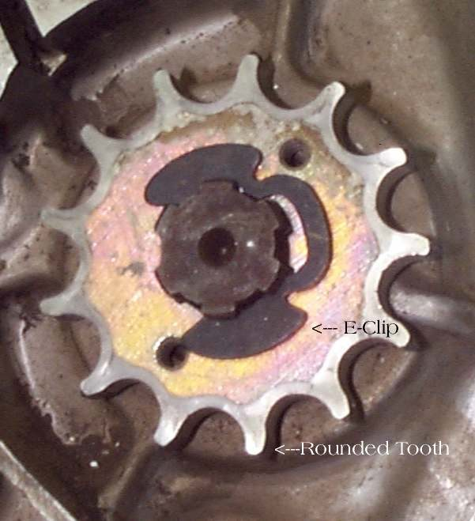

The front sprocket sits on the gearbox output shaft. A retainer keeps it from sliding off the shaft. There are three common kinds, and the bike will have one of them.
What it does
- Big nut and lock washer. A large nut screws onto the shaft, and a special lock washer sits between the nut and the sprocket. The washer has teeth that fit grooves on the shaft, so it cannot turn. One tab of the washer is bent up against a flat of the nut so the nut cannot turn. The nut has a groove or recess on one side, which faces the sprocket.
- Bolted clip. A plate fits in a groove on the shaft and is bolted to the sprocket with two bolts.
- E-clip. A big E-shaped clip in a groove on the shaft holds the sprocket on. It is quick to remove, but less secure, and the course says it usually means a non-standard keeper has been fitted.
Signs it is worn or failing
- Sprocket that moves on the shaft, or a loose nut after a short ride.
- A lock washer whose tab is cracked, flattened or will not bend again.
- Oil spraying around the sprocket: see Replace the output shaft seal.
- Chain that runs off line, rubs or jumps, because the sprocket sits wrongly.
When to replace it
Replace the lock washer every time the sprocket is removed, since the bent tab fatigues. Replace a clip that is bent or springy, bolts that are stretched, and a nut with damaged threads or corners.
What to match when buying
- Engine model and year. Nut size and thread, and the washer shape, differ between engines.
- The sprocket with the right number of teeth, and the same shaft splines.
- A new lock washer or retainer, as well as the nut.
Fitting notes
- If you want to undo the nut or bolts, do it while the chain is still on, so it holds the sprocket. If the sprocket still turns, have a helper hold the rear brake on.
- Fit the nut with its groove facing the sprocket. Tighten to the torque in your manual, then bend a fresh tab over a flat of the nut.
- Fit a dished sprocket the right way round. A sprocket fitted backwards wears quickly.
- Full job: Replace the chain and sprockets. Replace chain and sprockets as a set.